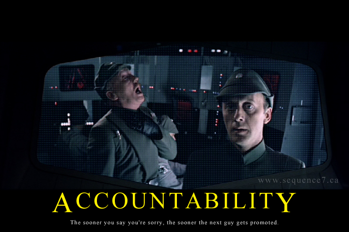
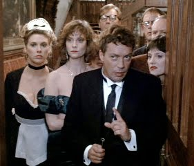
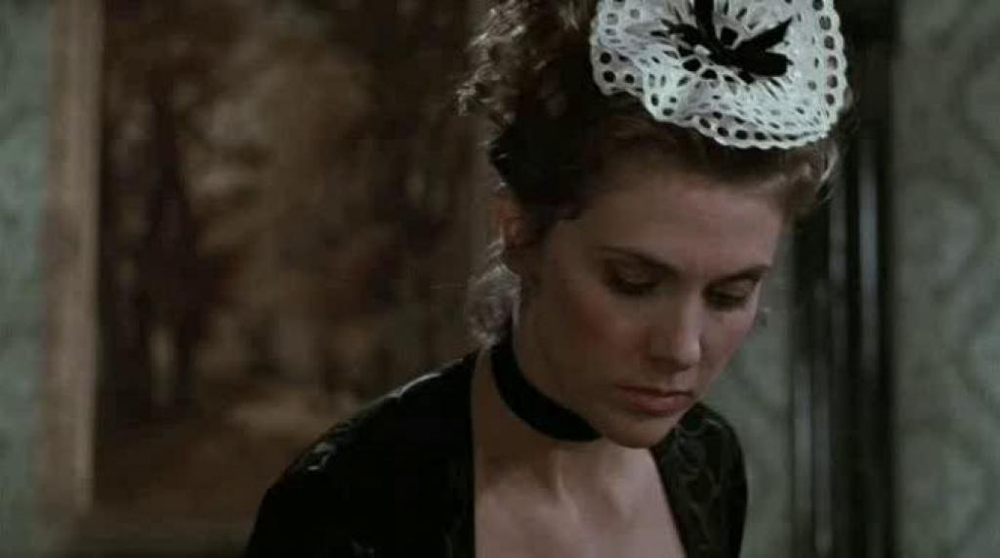
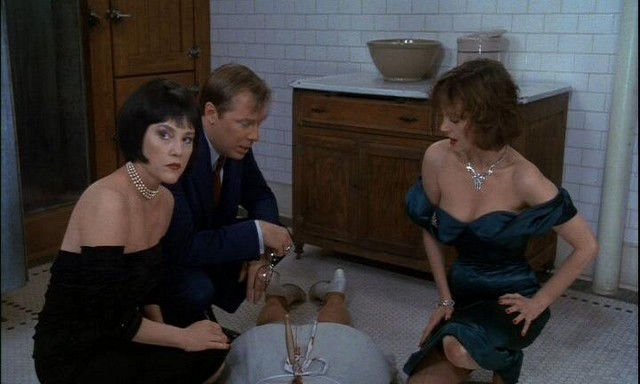
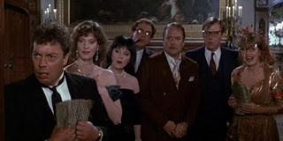
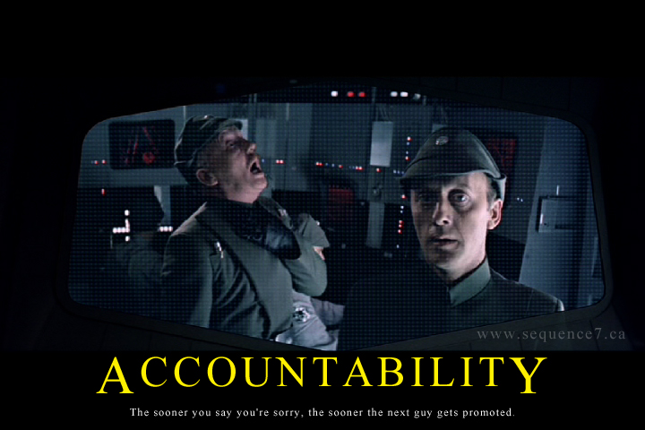
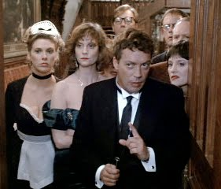
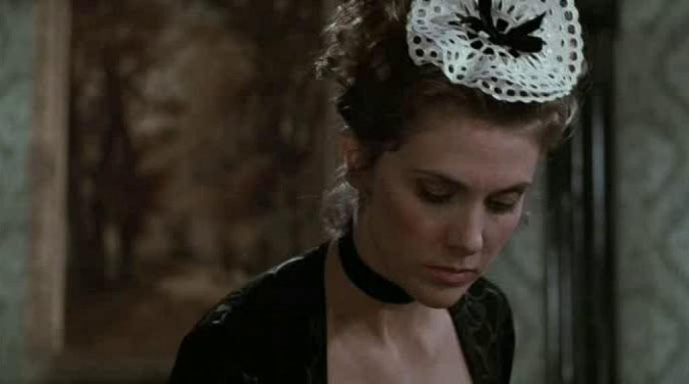
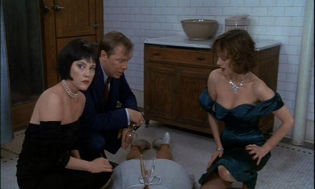
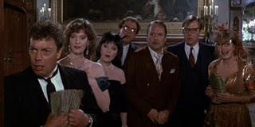

Welcome to Dianna's Time Capsule
Dear Dianna, Somethings may never change. Others will. That all depends on your idead of change, now doesn't it. I think I find it easy to write a letter to myself/you since I talk to myself so much. You may not remember just how much you did that. Here's a hint; A LOT. You know why it became such a common occurance. I'll update you on what's been going on in your/my life so far.
Oh, and another thing I forgot to mention. Samatha Kelley is sitting beside you and calls you weird for being obssessed with Star Wars as she uses Twilight for every idea she gets. Explain that one.
 








